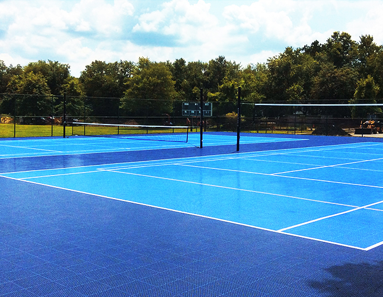
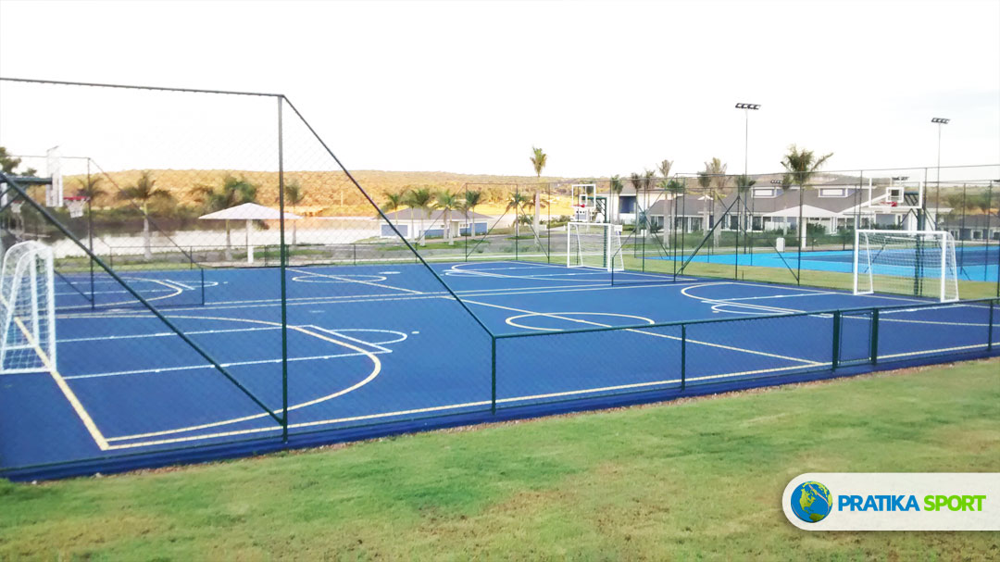
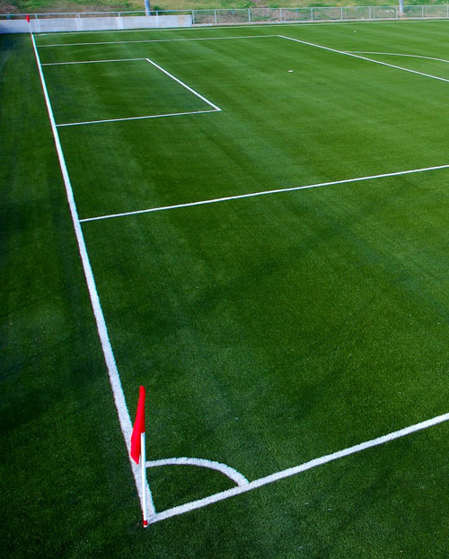
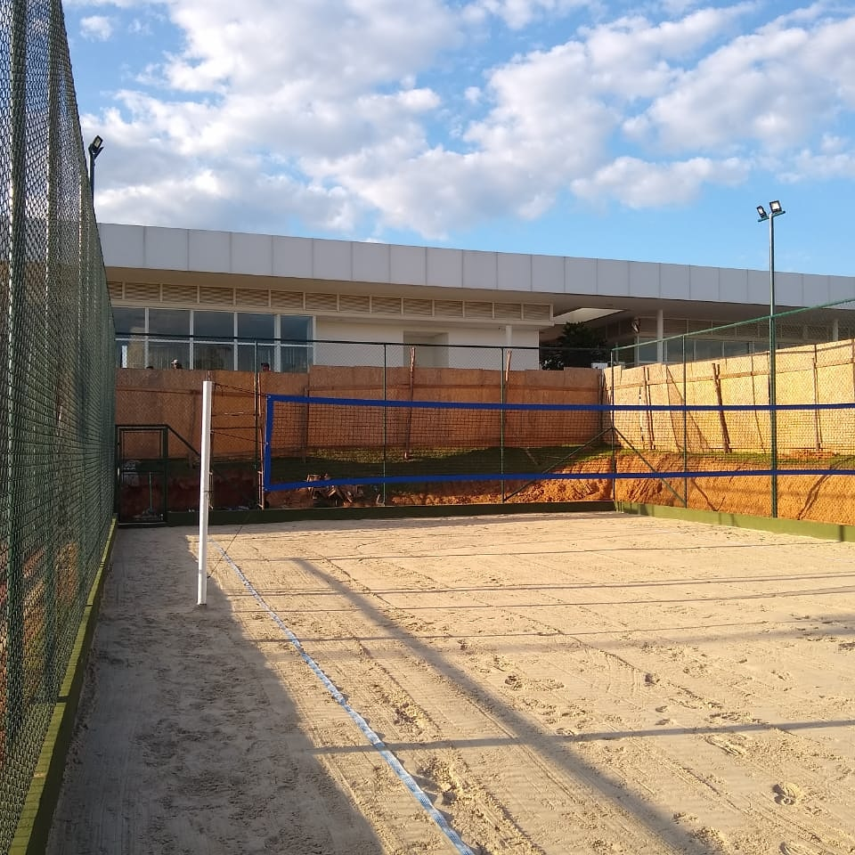

Quanto Custa Construir uma Quadra Poliesportiva em 2025?
Descubra os fatores que influenciam o preço de construção de uma quadra poliesportiva e como planejar seu investimento.
Dicas, novidades e informações sobre construção e manutenção de quadras esportivas.
Descubra os fatores que influenciam o preço de construção de uma quadra poliesportiva e como planejar seu investimento.

Compare os principais tipos de piso para quadras esportivas: modular, asfáltico, concreto e sintético.

Conheça as dimensões oficiais para quadras poliesportivas conforme as normas técnicas brasileiras.

Conheça as características de cada tipo de piso para quadra de tênis e escolha o ideal para seu perfil.

Descubra por que a grama sintética é a melhor escolha para campos de futebol society.

Aprenda como cuidar da sua quadra de beach tennis e prolongar sua vida útil.
Solicite um orçamento gratuito e transforme seu espaço em uma quadra esportiva profissional.
Falar no WhatsApp